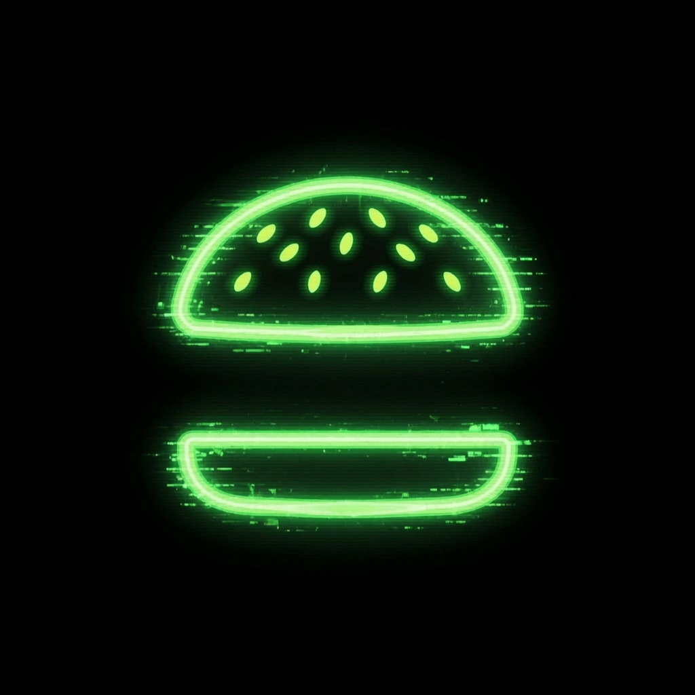

An open experiment documenting the journey of building a crypto project from zero.
Every milestone. Every setback. Every lesson.
Follow the JourneyDay 135
Website Version 0.3 officially launched on Day 128 (11 July 2026), marking the first public release of The Nothing Experiment website. Since launch, the website has remained online while development continues. We are now actively building Website Version 0.4, expanding the project with new sections, refining existing content, and improving the overall experience as the experiment continues.
The Nothing Experiment is an open journey documenting the process of building a crypto project from zero.
Every milestone, setback, lesson, and decision is documented publicly as the project evolves.
The experiment is built by one human working alongside multiple AI systems, with all final decisions remaining human.
The Nothing Experiment is developed by one human working alongside multiple AI systems.
AI assists with planning, research, brainstorming, strategy, design, and development.
Every final decision remains human. AI is a tool, not a replacement for accountability.